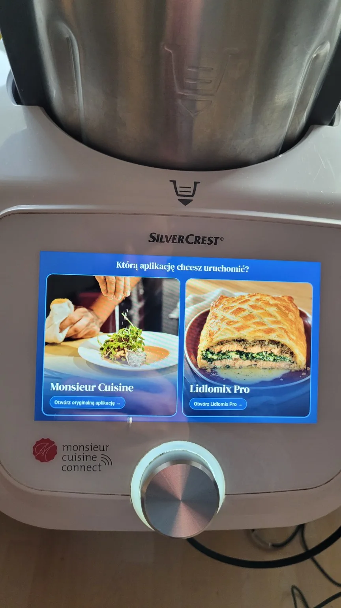

02 / Wydanie 0.15 ·
Dwie aplikacje na jednym Connect
Po restarcie zobaczyłem ekran, na którym mogłem wybrać, z której aplikacji chcę korzystać.
Próba z samym pendrivem nie dała oczekiwanego efektu. Zanim poszedłem dalej, zrobiłem kopię urządzenia. Potem na testowym Connect SKMC 1200 B2 udało mi się uruchomić Lidlomix Pro obok oryginalnej aplikacji. Sprawdziłem obie karty również po restarcie.

W Pro mogłem już szukać przepisów z lokalnego katalogu bez pobierania ich za każdym razem. W testowej bazie było 10 058 pozycji. Na robocie wyszukałem między innymi pitę, otworzyłem przepis i sprawdziłem składniki. Do menu trafiły też kobaltowe ikony programów i narzędzi.


To był pierwszy moment, kiedy zamiast tłumaczyć pomysł mogłem pokazać dwa ekrany: wybór aplikacji i menu. Od tych samych ekranów zacznę film, kiedy go nagram.
Komentarze
Komentarze są dostępne na GitHubie.
Otwórz wątek i skomentuj